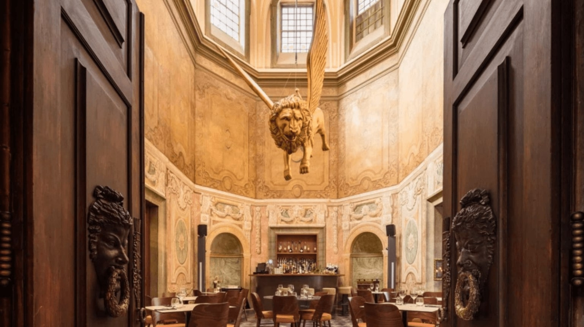

Lissabon zit vol met gezellige eet- en drinkgelegenheden. Van chique restaurants met versgevangen vis tot
lokale koffietentjes waar je de welbekende 'Pastel de Nata' kan eten, voor ieder wat wils.
Ik heb deze pagina daarom ook onder verdeeld in 4 delen waarbij ik per onderdeel mijn favoriete tent met jullie deel: ontbijt, lunch, diner en tot slot mijn favoriete café.
Ontbijt
Dear Breakfast
Dear Breakfast was een van mijn favoriete ontbijttentjes en ik zou het iedereen aanraden om zeker een keer langs te gaan. Dear Breakfast biedt niet alleen een heerlijk ontbijtje, maar ook een Instagramwaardige ervaring. Probeer de iconische roze cappuccino, een kleurrijk kunstwerkje dat niet alleen heerlijk smaakt maar ook een lust voor het oog is. Deze speciale cappuccino is perfect om je dag op te fleuren en te delen op sociale media. Naast deze opvallende drank biedt 'Dear Breakfast' een scala aan smakelijke opties en een gastvrije sfeer. Ontdek deze unieke plek en trakteer jezelf op een kleurrijke en heerlijke start van je dag in Lissabon.
Lunch
Time Out Market

Dit is een grote indoor markthal aan de waterkant vlakbij het centrum van Lissabon, dit is een zeer populaire attractie onder de touristen maar ook onder de locals. Je kunt hier echt alles halen wat je maar kunt bedenken als het gaat om eten. Burgers, sushi, visgerechten, gegrilde groentes, noem maar op.
Ik ging hier eerst alleen heen omdat het een erg populaire attractie is in Lissabon die je niet gemist kan hebben.
Ik was alleen van plan om één enkele keer langs te gaan om even rond te kijken, al gauw stond ik versteld van de geur
en alle lekkere hapjes om mij heen. Ik besloot een burger te halen met sweet potato fries en een bananen milkshake, dit was een van de lekkerste
burgers die ik ooit had gegeten en kon me er niet van weerhouden om de volgende dag terug te gaan.
De volgende dag besloot ik om ook nog wat hapjes te testen bij de andere kraampjes, ik ging voor verse vis en calamares.
Ook dit was weer een succes en ik heb van allerlei verschillende mensen alleen maar positieve verhalen gehoord over de TimeOut Market.
Zeker een aanrader dus!
Diner
Palace Chiado
Palace Chiado' is een bijzonder restaurant dat zich bevindt in het historische Chiado-district van Lissabon. Dit restaurant is gevestigd in een prachtig gerestaureerd paleis en biedt een buitengewone culinaire ervaring met een combinatie van moderne Portugese en internationale gerechten. Het elegante interieur, de kristallen kroonluchters en de smaakvolle inrichting creëren een uiterst bijzondere sfeer. Op de menukaart staan gerechten die een moderne draai geven aan klassiek Portugees eten. Geniet van verfijnde gerechten, uitstekende wijnselecties en een onvergetelijke ambiance bij 'Palace Chiado,' waar culinaire verfijning en geschiedenis samenkomen.
Cafés
Cantinho do Prazer
Cantinho do Prazer is een verborgen juweeltje in Lissabon voor degenen die op zoek zijn naar een gezellige avond
en goedkoop bier van de tap. Dit knusse café gelegen in de welbekende "Pink Street" biedt een ontspannen sfeer en is geliefd bij zowel de lokale bevolking als toeristen.
Wat Cantinho do Prazer echt bijzonder maakt, is de prijs van het bier. Hier kun je genieten van een vers getapt biertje voor slechts
1 euro, wat het een van de meest betaalbare plekken in de stad maakt. Het is de perfecte plek om te ontspannen,
nieuwe mensen te ontmoeten en te genieten van een voordelige avond uit in Lissabon.
Dus, als je op zoek bent naar een gezellige plek om 's avonds te ontspannen en een lekker biertje te drinken
zonder veel uit te geven, is Cantinho do Prazer zeker een bezoek waard.